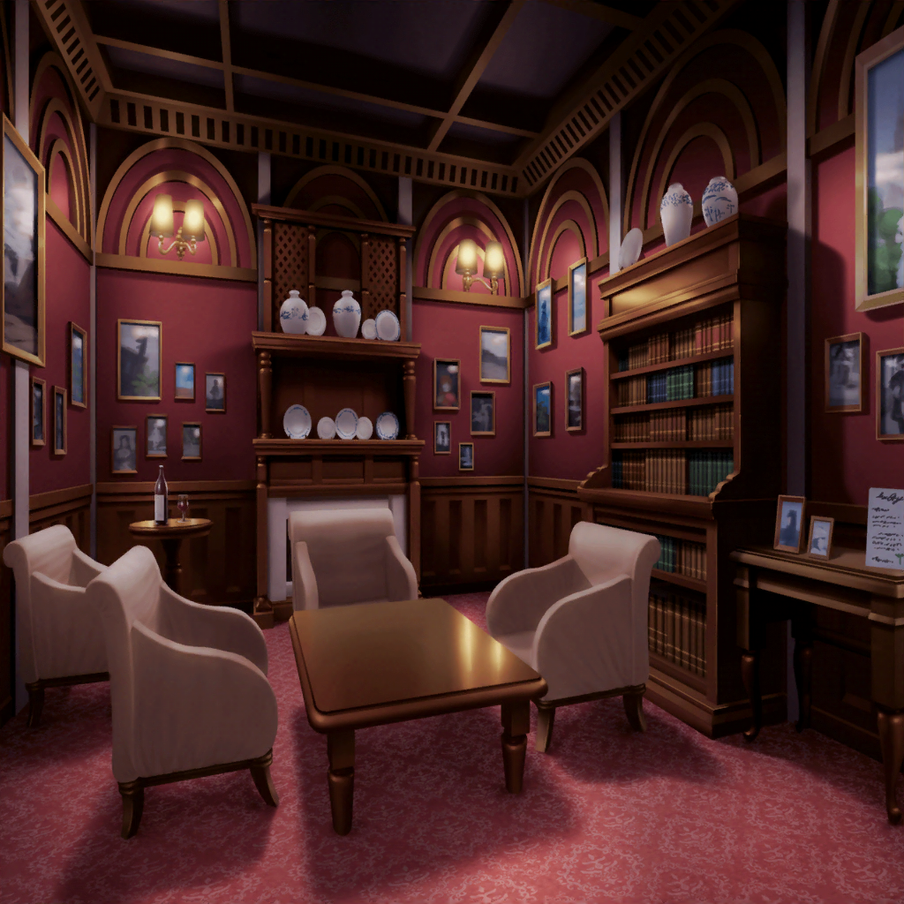

第２の部屋
日菜
ここが、第２の部屋かー
彩
ちょっと日菜ちゃん、待ってよーっ！
一人で行動したら危ないって！
彩
……え！？
な、なんか扉が閉まっちゃったよっ！
彩
ち、千聖ちゃん！ イヴちゃん！ 麻弥ちゃん！
そ、そっちは大丈夫！？
麻弥
すみません！ こ、こっちは問題ありません！
急いで二人を追いかけたんですが、彩さんが部屋に入った途端
急に扉が閉まってしまいましたっ！
彩
ねえ、日菜ちゃん！ どうしよう！？
みんなと離れ離れになっちゃったよっ！？
日菜
あはは！ 本格的になってきたねー！
たぶん最初っからそうするつもりだったんだよ！
彩
え？
千聖
私も日菜ちゃんの言う通りだと思うわ。
私達を分断して、それぞれのチームでゴールを目指す……
これも番組を盛り上げるための演出の１つでしょうね
イヴ
こうなったら虎穴に入らずんば虎子を得ず、です！
それぞれ金のジャック・オー・ランタンを集めて
必ず合流しましょう！
彩
う、うん！ そうだね！
こっちには日菜ちゃんがいてくれるから大丈夫だと思う！
……あ、もちろん、私もがんばるけどっ！
イヴ
アヤさん、ヒナさん、ご武運を！
彩
と、とにかく、一刻も早くこの部屋の謎を解いて、
みんなと合流しないと、だよね！
日菜
けど、この部屋って、なんかいかにもな雰囲気だよねー。
書斎、っていうイメージなのかな?
彩
わ、壁にたくさん肖像画が飾ってあるよ！
日菜
えーと、あれがベートーベンでしょ。そのとなりがバッハ。
で、あっちがモーツァルト、ショパン、リスト……
んー、何か音楽家の肖像画ばっかりだね
彩
え？ 日菜ちゃんってもしかして、全員わかるの？
日菜
えー？ わかるよ！ 音楽室とかにも貼ってあるし
彩
私は、ベートーベンとバッハくらいはわかるけど……
他の人は、ちょっと微妙かな……ん！？
ねえ、日菜ちゃん、あそこ見て！ あの１枚だけ真っ白だよ！
日菜
あ、ホントだー。
たぶんあれが、この部屋の問題じゃない？ 行ってみよ！
彩
あ、見て！
額縁の隙間にカードが入ってるよ！
日菜
おー、彩ちゃん、すごいじゃーん！ お手柄だよー！
彩ちゃん、問題が書かれたカードを見つけるのは早いよねー！
ほかはまあアレだけど……
彩
うう、否定できない……
とりあえず、読んでみるね
彩
えっと……
『我が肖像画を、壁に掲げよ。さすれば道は開かれん』
……だって
日菜
我が、肖像画……か。
その『我が』ってところがこの問題のキモって感じだねー
彩
え……？ どういうこと？
私は、まだ全然わかってないんだけど……
日菜
『肖像画』を『掲げよ』でしょ？
……ってことは、誰かの肖像画を描けばいいってことじゃん？
彩
じゃ、じゃん？ って……日菜ちゃん、すごすぎるよ……
でもそっか、なるほど……
そしたら、誰を描けばいいかわかればいいんだよね？
彩
えっと、たぶんこの感じだと、音楽家なのは間違いないから……
肖像画になるような、偉大な音楽家ってことは……
日菜
あ！ おねーちゃんとか！
彩
さ、紗夜ちゃん！？
そ、それはさすがに……ないんじゃないかな？
日菜
あはは、冗談だってばー。
たぶんヒントはこの部屋のどっかにあるんじゃない？
日菜
てゆーことは……ほら！ 彩ちゃんの出番だよっ！
彩ちゃん、探すのは得意じゃん？
彩
日菜ちゃん……その言い方はちょっと、複雑……
５分後
日菜
どう？ 彩ちゃん、何か見つかったー？
彩
ううん、まだ何も……
見つかったのは、このホテルの見取り図ぐらいで……
日菜
え？ 見取り図！？ 見取り図が見つかったの！？
彩
……え？ な、なんで？ ただの見取り図、だよ？
ハロウィンっぽい部屋の名前が書いてあるだけだけど……
日菜
彩ちゃん、それちょっと見せて！
彩
う、うん……
一応、こんな感じだけど……
日菜
えっとー、あたし達が１番初めにいた部屋が、この大広間でしょ？
で、この部屋を抜けて、今ここに来てるから……
この部屋の名前はたぶんこれ、だよね？
彩
『ジャック・オー・ランタンの書斎』……っ！？
日菜
ほら、やっぱり重要な手掛かりだったじゃん！
この部屋の主がジャック・オー・ランタンっていう設定なんだよ！
つまり、さっきのカードの『我が肖像画』っていうのは――
彩
ジャック・オー・ランタン……ってこと！？
日菜
絶対そうだよ！
よーっし、あたし描いてみるっ！
彩
うん！ お願い！
５分後
日菜
よーし、完成、っと！
あとはこれを額縁に入れてー
彩
あっ！ 額縁が裏返って、
中から金のジャック・オー・ランタンが出てきたよっ！
日菜
やったー！ これで２つ目ゲットだね！
彩
す、すごくない、私達！
ここまで順調にクリアできてるって感じだよね！
日菜
彩ちゃんが、もう少し早くホテルの見取り図のこと
教えてくれたら、もうちょっと早くクリアできたけどね♪
彩
ひ、日菜ちゃん……
それは言わないで……
日菜
それじゃあ先に進もう！
千聖ちゃん達は今頃、どんな感じかねー？
彩
千聖ちゃん、イヴちゃん、麻弥ちゃん……
大丈夫かな……？